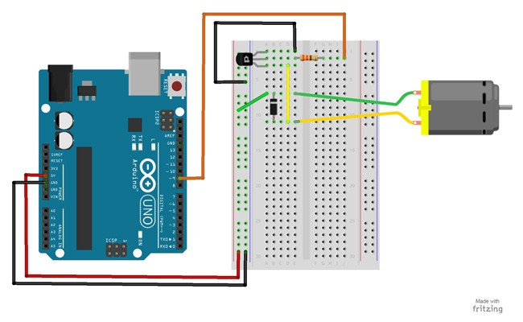

Using a switching transistor, we will be able to control a DC motor. If everything is connected correctly, you should see the motor spinning.
Parts Needed
- (1) Arduino Uno
- (1) USB A-to-B Cable
- (1) Breadboard – Half Size
- (1) Breadboard – Half Size
- (1) 330 Ω Resistor
- (1) Diode 1N4148
- (1) NPN Transistor
- (6) Jumper Wires
Project Diagram
Project Code
- Connect the Arduino board to your computer using the USB cable.
- Open project code – Circuit_14_Motor
- Select the board and serial port as outlined in earlier section.
- Click upload button to send sketch to the Arduino.